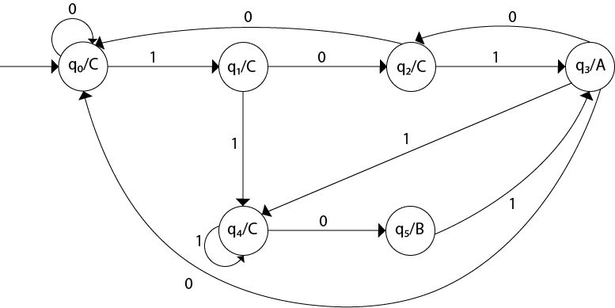

Moore Machine Simulator
An implementation of Moore finite state machines exploring automata theory, formal languages, and the hierarchy of computation models.
Project Details / Background
Implemented a Moore Machine as part of an Automata and Formal Languages course, demonstrating proficiency in mathematical language including formal proof generation. The project explores the relationship between different types of automata and their computational capabilities.
Utilized finite automata, stack machines, and Turing machines for designing models in language recognition and problem-solving. The implementation showcases the hierarchy relationships between language classes and their corresponding machine types, from regular languages to context-free and recursively enumerable languages.
Applied diverse computation models for numeric and string function calculations, illustrating practical applications of theoretical computer science concepts. The project bridges the gap between abstract automata theory and concrete implementation, providing tools for visualizing state transitions and output generation.
Image Gallery

Moore Machine — State transition diagram